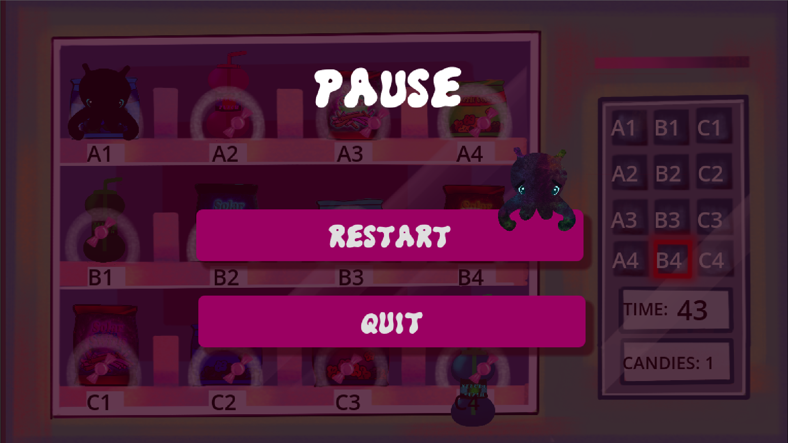
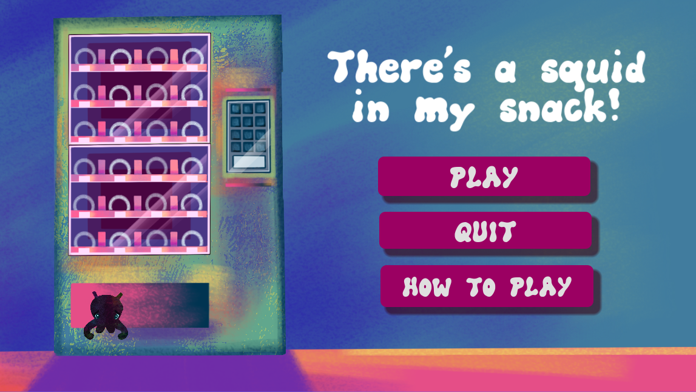
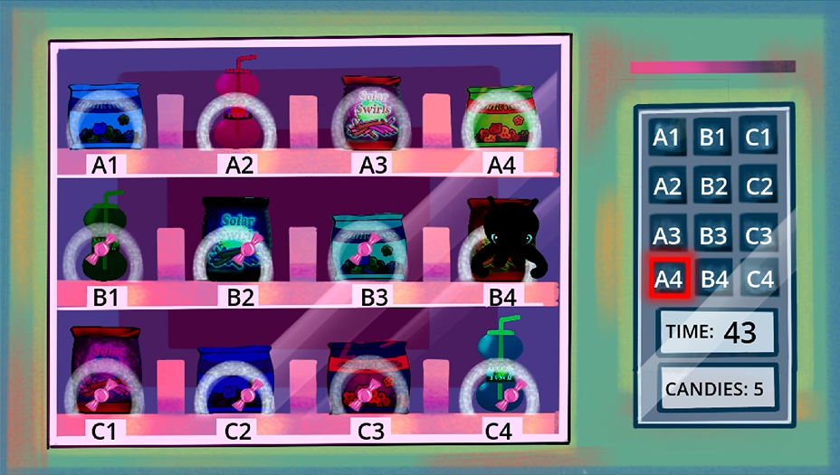
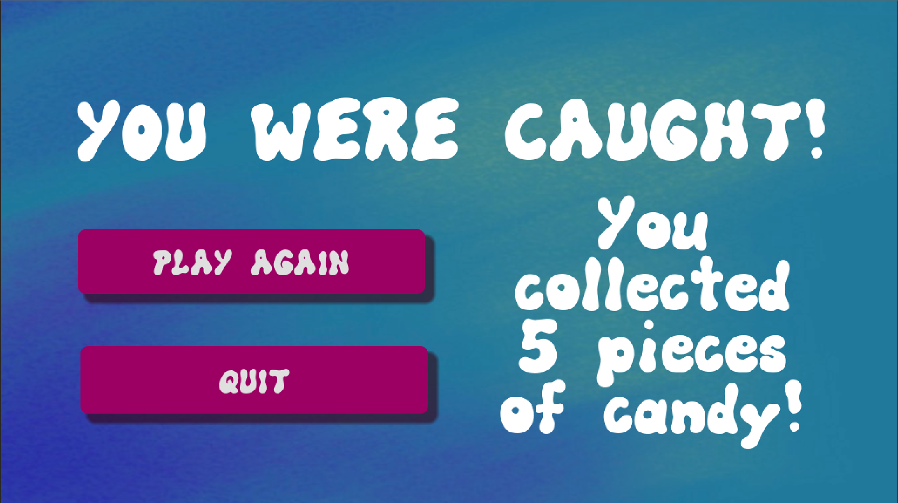
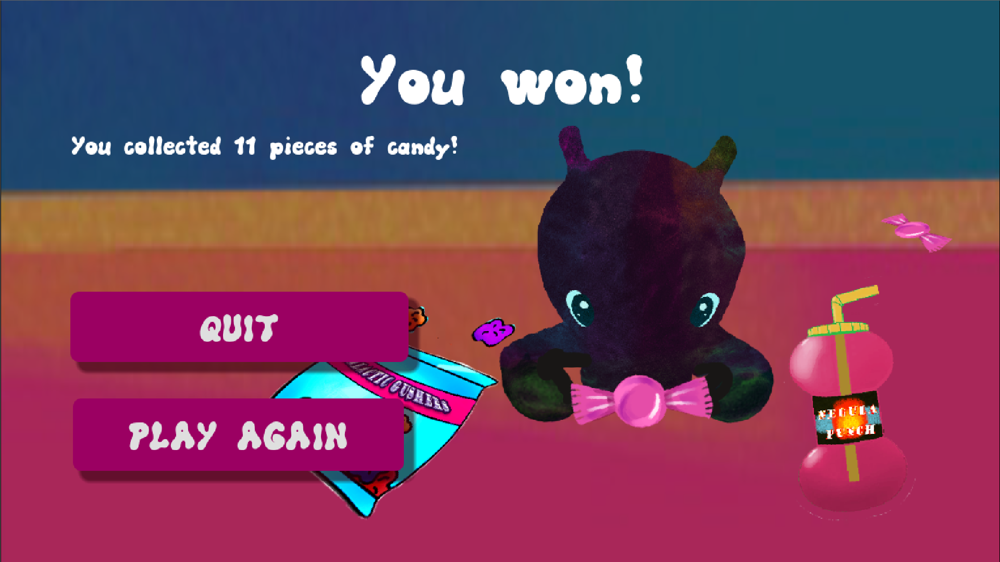
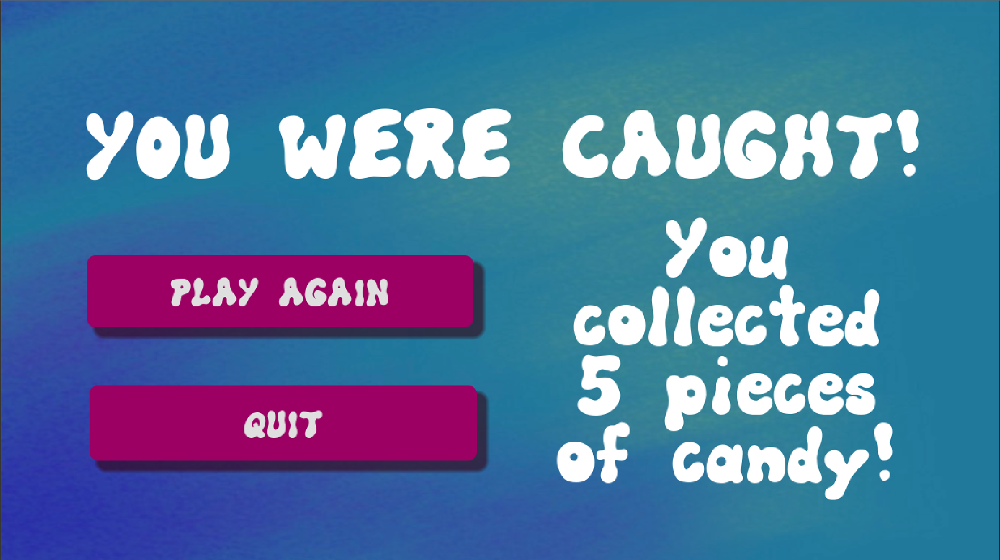
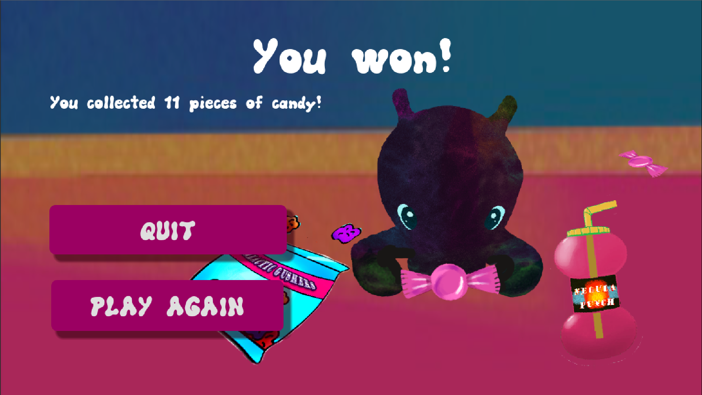
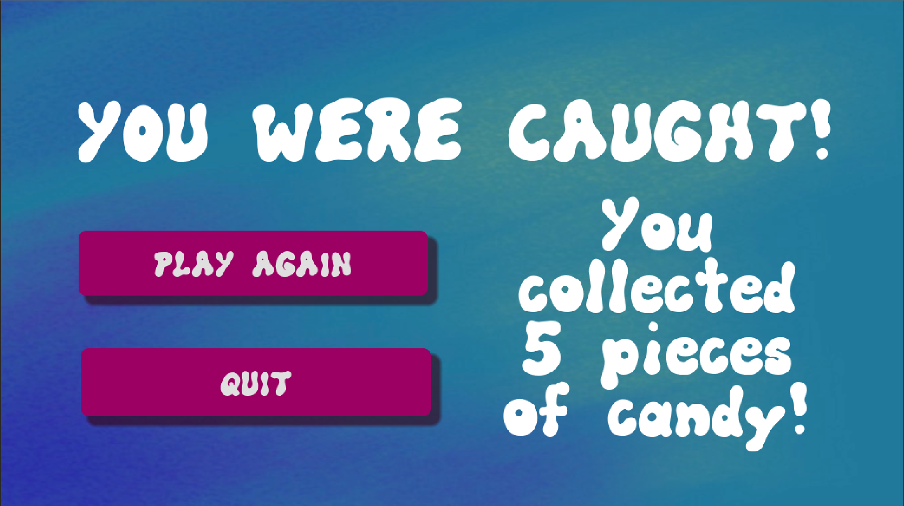
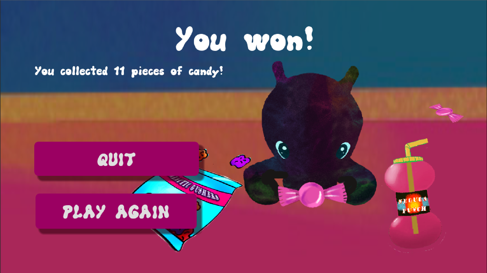

There's a Squid in my Snack! was created on a team of three for a local game jam, which took place in 48 hours. The theme, 'Inside Out,' was interpreted as the player escapes capture from the inside of a vending machine. An extra incentive for moving around the machine is a collectable candy, in which you can collect all, some, or none of. Téa's contrubution on this project emphasized user interface development, gameplay programming, input handling, random events, timers, and scene management.



 




